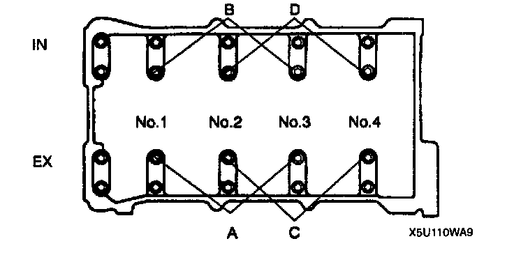
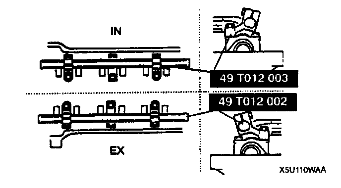
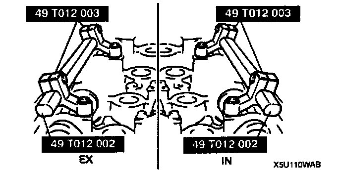
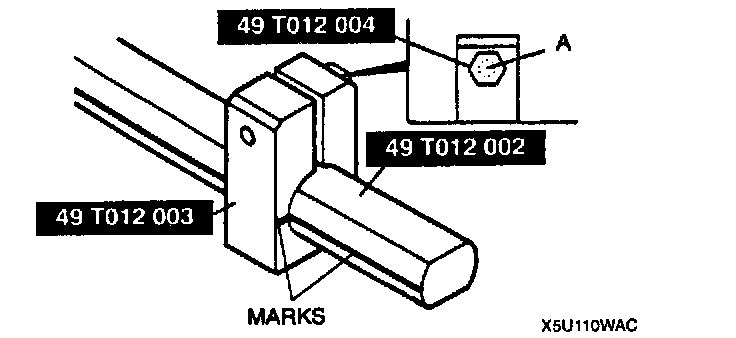
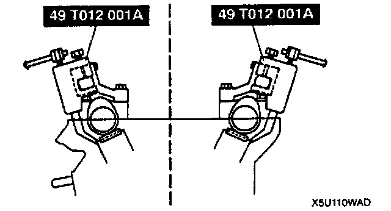
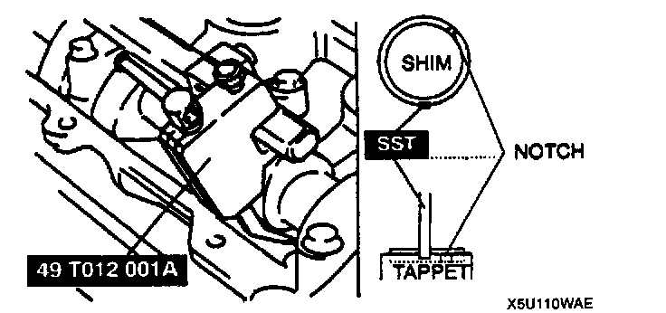
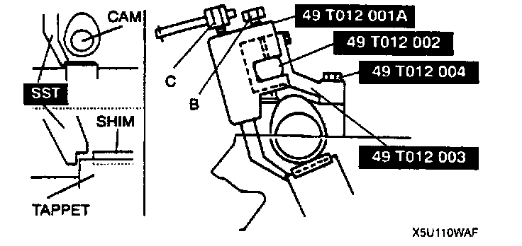
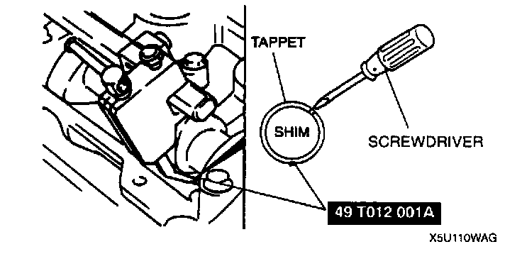

Valve Clearance: Adjustments
VALVE CLEARANCE ADJUSTMENTPerform this same procedure for all camshafts requiring valve clearance adjustment.
1. Turn the crankshaft clockwise so that the cams on the camshaft requiring valve clearance adjustment are positioned straight up.
2. Remove the camshaft cap bolts as necessary. Remove only one pair of cap bolts at a time.
Install the cap bolts before removing the next pair.
A: For EX side No.1, 2, 3 cylinder adjustment shim removal.
B: For IN side No. 1, 2, 3 cylinder adjustment shim removal.
C: For EX side No.2, 3, 4 cylinder adjustment shim removal.
D: For IN side No.2, 3, 4 cylinder adjustment shim removal.

Note:
^ For EX side No.2, 3 cylinder adjustment shim removal, remove bolts either A or C.
^ For IN side No.2, 3 cylinder adjustment shim removal, remove bolts either B or D.


3. Install the Special Service Tools (SSTs) on the camshaft using the camshaft cap bolt holes.
Tightening torque: 11.3 - 14.2 Nm (115 - 145 kgf.cm, 100 - 125 inch lbs.)
4. Align the marks on the (SSTs) (shaft and shaft clamp).

5. Tighten bolts A to secure the SST (shaft).

6. Face the SST (body) outside of the cylinder head, and mount it on the SST (shaft) at the point of the adjustment shim to be replaced.

7. Face the notch of the tappet so that a small screwdriver can be inserted.
8. Set the SST on the tappet by its notch.
9. Tighten bolt B to secure the SST (body).
Caution:
^ Cylinder head can be damaged when the tappet is pressed down.

10. Tighten bolt C, and press down the tappet.

11. Using a fine screwdriver, pry up the adjustment shim through the notch on the tappet. Remove the shim by using a magnet.
12. Select proper adjustment shim.
New adjustment shim = Removed shim thickness + Measured valve clearance - Standard valve clearance
(IN: 0.21 mm (0.008 inch), EX: 0.31 mm (0.012 inch))
13. Push the selected shim into the tappet.
14. Loosen bolt C to allow the tappet to move up.
15. Loosen bolt B and remove the SST (body).
16. Remove the SSTs and tighten the camshaft cap bolts.
Tightening torque: 11.3 - 14.2 Nm (115 - 145 kgf.cm, 100 - 125 inch lbs.)
17. Verify the valve clearance. Testing and Inspection